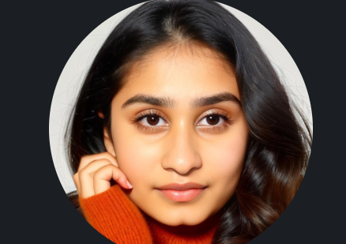
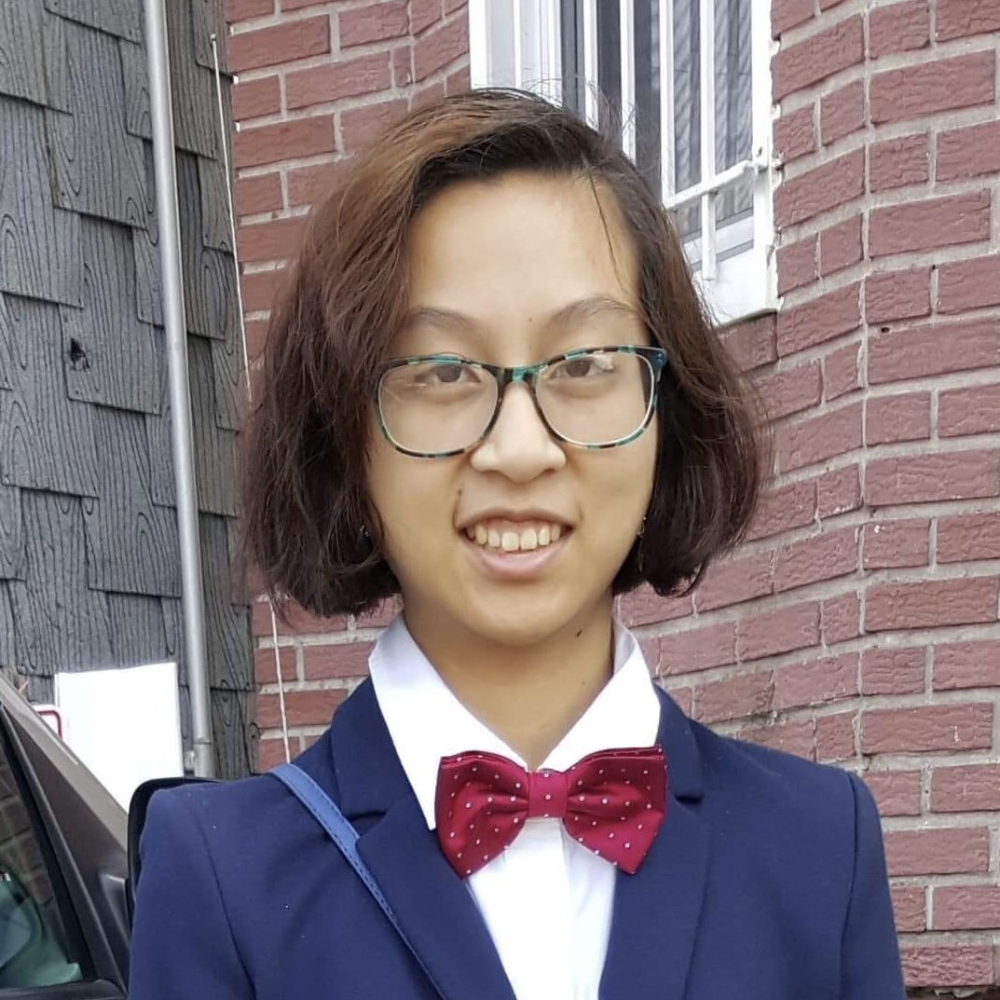

About Us
We are a group of Computer Science students at Stevens Institute of
Technology. Read more about each of us bellow.
- Karina Berberian
-
Email:
(kberber1@stevens.edu)
- (My name is Karina Berberian, and I'm a Senior at Stevens Institute of Technology. I am majoring in
Computer Science and am working to receive my concentration in Artificial Intelligence and Machine
Learning. I am currently a peer leader on campus and part of the Stevens Women in Computer Science Club.)
-
Links: LinkedIn
Handshake,
- Catherine DeMario
-
Email:
cdemario@stevens.edu
-
I am a fifth-year computer science student at Stevens Institute
of Technology in Hoboken, NJ. I am deeply engaged in campus life
at Stevens. I serve as a teaching assistant for a graduate-level
introductory computing class, am a student advisor to the Stevens
CS Department, and am the President of Stevens Women in Computer
Science (SWiCS). My work experience is diverse. I have worked on
web internationalization for a photonics manufacturer, DevOps for
an A/V equipment manufacturer, embedded software for household
appliances, and desktop software for tactical communications.
Aside from technology, I am passionate about music -- I am the
Principal Violist of the Stevens Orchestra and a teacher & mentor
to young music students.
-
Links: LinkedIn
- Brandon Kreiser
-
Email:
bkreiser@duck.com
-
I am a 5/5 Computer Science student at Stevens Institute of
Technology. I am eager to learn and grow as much as I can here at
my time at Stevens, and I plan to make a career in a Computer
Science job. More specifically I am interested in
project/resource management, but right now I am taking the time
to learn as much as I can to broaden my horizons.
-
Links:
LinkedIn, Github

- Suneedhi Laddha
-
Email:
sladdha2@stevens.edu
-
Hello, I am Suneedhi Laddha a 4/4 CS major and Qf minor. Over the
years, I have gained experience in a variety of programming
languages and frameworks. I have experience with basic machine
learning and deep learning algorithms having taken CS 583 taught
by Professor Tian Han and CS 559 taught by professor In Suk Jang.
I also have experience with web development and am familiar with
frameworks such as Nodejs and databases such as MongoDB and
MySQL. Over the summer, I held an interned at Voya Financial in
their application & development team where I aided in
automatation of the QA tasks worked on by the QA team that my
manager managed.
-
Links:
LinkedIn, Github,
- Roger Shagawat
-
Email:
rshagwa@stevens.edu
-
About Me: I am a 5/5 Computer Science student at Stevens
Institute of Technology. I'm excited to learn and am taking
advantage of all the resources Stevens has to offer. I'm looking
for any job having to do with computer science. I'm happy to
tackle new challenges and love to solve complex problems. I'm
currently trying to learn as much as I can about broad fields in
computer science. I like to write poetry in my spare time.
-
Links:
LinkedIn , Github,
Handshake

- Cindy Tran
-
Email:
ctran2@stevens.edu
-
I am a senior 4/4 studying for a Bachelor of Science in Computer
Science at Stevens Institute of Technology with a minor in Visual
Arts and Technology. I am currently looking for an internship in
software development, web development, and game development. I am
skilled in Java, Python, HTML, CSS, JavaScript, React.
-
Links:
LinkedIn, Github